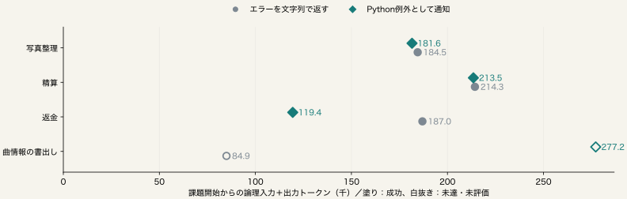

状態保持型エージェントにおける
API失敗通知の比較
既知４課題の固定比較。表紙は題名のみ。
10月23日 API失敗通知の比較 / 02
失敗の伝え方を、仕事全体の成否と費用で比べる
成功時の型付き値は共通。実際のAPI例外だけを、通常の文字列またはPython例外として返す。
| 既知課題 | 事前検査入力token | 入力照合 |
|---|
| 写真整理 | 3,103 | 両条件で一致 |
| 精算 | 3,092 | 両条件で一致 |
| 返金 | 3,065 | 両条件で一致 |
| 曲情報の書出し | 3,111 | 両条件で一致 |
最初から推論履歴を保持。持続Python、公開API名、予算も共通。
必要な処理と最終品質を保ち、失敗と再取得を含む総費用を減らすための診断。
４課題×２条件を各１回。入力照合は経過０秒での事前検査。実行時は実測した残時間を毎回通知する。旧P29/P76の完全再現ではなく、例外通知自体を新規手法としない。
10月23日 API失敗通知の比較 / 03
全８予定条件を、未達と欠測も含めて示す
| 課題 | 条件 | 成否 | 全仕事token | 生成 | API | API例外 |
|---|
| 写真整理 | 文字列 | 成功 | 184,501 | 17 | 103 | 1 |
| 写真整理 | 例外 | 成功 | 181,555 | 18 | 103 | 1 |
| 精算 | 文字列 | 成功 | 214,306 | 23 | 25 | 3 |
| 精算 | 例外 | 成功 | 213,504 | 23 | 23 | 3 |
| 返金 | 文字列 | 成功 | 186,960 | 16 | 17 | 0 |
| 返金 | 例外 | 成功 | 119,442 | 10 | 17 | 0 |
| 曲情報の書出し | 文字列 | 未達 | 84,946 | 10 | 80 | 0 |
| 曲情報の書出し | 例外 | 未達 | 277,203 | 20 | 80 | 1 |
課題開始からの全入力・出力を計上。制御、推論、失敗、回復も含む。
不明は０で補完しない。API例外は型付き記録で確認した実際の呼出し例外で、業務上のfalse戻り値や書式拒否とは分ける。
10月23日 API失敗通知の比較 / 04
小さな入力や短い失敗だけでは、効率化と判定しない

同じ課題の品質と全費用を併せて読む。既知部分の減少だけでは合計差は確定しない。
矢印マーカーは使用量不明を含む既知部分。塗りは公式成功。横軸はキャッシュ入力を含む論理tokenで、金額・時間の削減率ではない。
10月23日 API失敗通知の比較 / 05
固定した品質と費用の基準で判定する
| 条件 | 成功／評価 | 全仕事token合計 | 実API例外 |
|---|
| エラーを文字列で返す | 3/4 | 670,713 | 4 |
| Python例外として通知 | 3/4 | 791,704 | 5 |
例外−文字列の全費用差：+120,991 token。
全８評価・使用量既知・実API例外あり・双方成功の課題あり・成功喪失なし・全体費用減少を要求。
既知群での局所採用基準は満たさなかった。 一般的な品質維持や新規性の証明とは区別する。
実例外がない条件では通知方法の違いが使われていない。事前検査の入力一致と、実行中の入力一致は別。計算の非決定性と実測残時間の差も残る。
10月23日 API失敗通知の比較 / 06
費用差が、失敗通知の効果とは限らない
| 課題 | 実API例外
文字列 / 例外 | 最初の送信要求 | 最初に差が出た
モデル呼出し | 差は例外より前 |
|---|
| 写真整理 | 1 / 1 | 一致 | 4 | いいえ |
| 精算 | 3 / 3 | 一致 | 4 | いいえ |
| 返金 | 0 / 0 | 一致 | 6 | はい |
| 曲情報の書出し | 0 / 1 | 一致 | 6 | はい |
参照IDだけを一貫して置換し、入力と公開出力を元の順で比較。残時間通知は保持。
実API例外が０の返金では、費用差を通知方法の効果とは解釈しない。
全４対の事後読取。未処理JSONは全対の第２回で参照IDだけが異なり、元の記録を保存。表はID対応をそろえた後の比較。未知応答は保留。JSONとモデル内部状態の一致は別で、因果効果は特定しない。
10月23日 API失敗通知の比較 / 07
記録を閉じ、主張できる範囲を残す
モデル生成 137回、API 448回。
専有推論器 4,390.281秒、ロード 10.065秒。
独立評価の実測合計 13.175秒。
- 全条件の入力、予算、使用量、例外記録、独立評価を監査。
- 所有サーバー停止とプロセス不在を確認。
- 既知４課題・各１回。未開封12課題は使用しない。
通常の実行設計を測った結果として、情報保持と実行制御の研究へつなぐ。
準備、実作業、後始末、評価はサーバー滞在時間と重なる。重複加算しない。過去の成否と費用を修正後の結果で上書きしない。